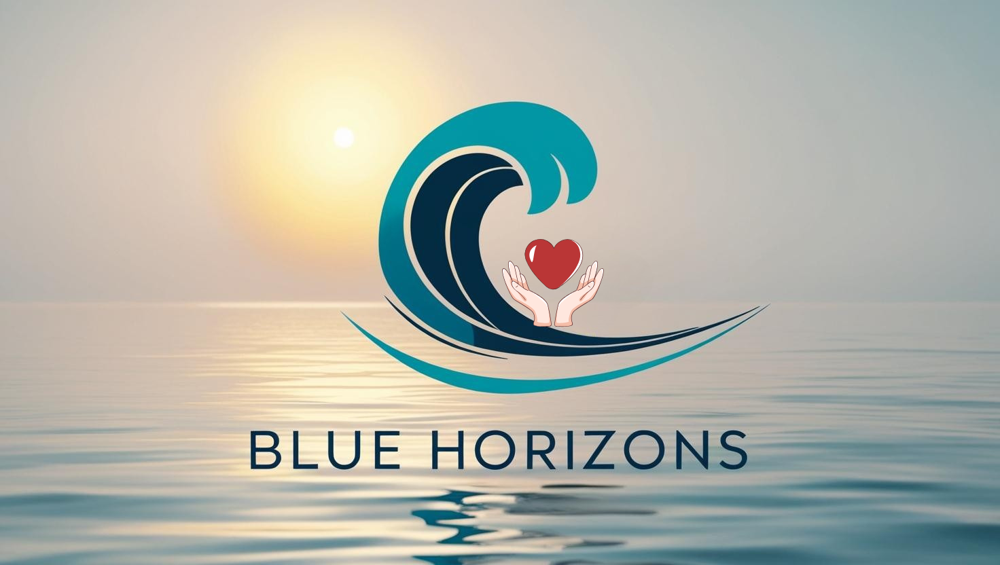
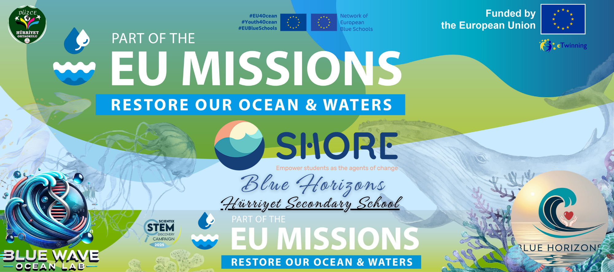

Aylardır süren emeğimizin, öğrencilerimizin coşkusunun ve projemizin ruhunun bir özeti olan kısa filmimizi sizlerle paylaşmaktan büyük bir gurur ve mutluluk duyuyoruz! "Blue Horizons: Yarınlar İçin Bir Farkındalık Dalgası" SHORE projemizin bu kapanış belgeseli, suyun önemi ve korunması bilinciyle çıktığımız yolculuğun en samimi tanığıdır. 15 dakikalık bu filmde, projemizin başlangıcından finaline kadar yaşadığımız tüm süreci, öğrencilerimizin gözünden izleyeceksiniz. Filmimizde Neler Var? Uygulamalı Faaliyetler: Efteni Gölü'nde yapılan bilimsel deneylerden, okulumuzun duvarlarını renklendiren sanatsal atölyelere; yerel su kaynakları incelemelerinden, farkındalık yaratan sosyal medya kampanyalarına kadar proje boyunca gerçekleştirdiğimiz tüm etkinliklerden çarpıcı kesitler. Röportajlar: Projemize gönül veren ve her aşamasında bizlerle olan proje ekibi öğretmenlerimizin, projenin hedeflerini, karşılaşılan zorlukları ve elde edilen başarıları kendi ağızlarından dinleme fırsatı. Öğrenci Deneyimleri: Projemizin asıl kahramanları olan öğrencilerimizin bu süreçte neler öğrendiklerini, çevreye bakış açılarının nasıl değiştiğini ve bu projenin onlara neler kattığını yansıtan anlar. Sanat ve Müzik: Öğrencilerimizin projemiz için özel olarak bestelediği şarkının nağmeleri eşliğinde, onların yaratıcılıklarının bir ürünü olan sanatsal çalışmalar. Bu film, sadece bir faaliyet özeti değil; aynı zamanda bir umudun, işbirliğinin ve gençlerin doğru rehberlikle çevreleri için ne kadar harika işler başarabileceğinin bir kanıtıdır. Şimdi sizleri, "Mavi Ufuklar"ın kalbine yapacağınız bu kısa ama anlamlı yolculukla baş başa bırakıyoruz. Keyifli seyirler!
